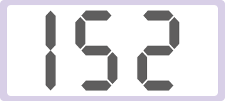
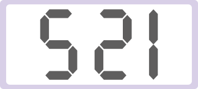
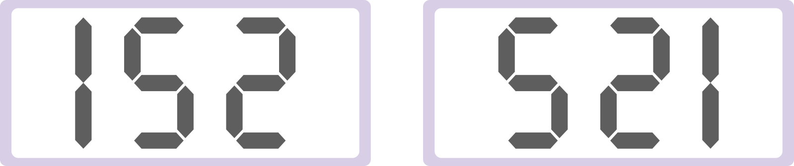

- 개념 정리
- 1
- 2
- 3
- 4
- 5
-
도형을 위쪽이나 아래쪽으로
뒤집으면 모양은 변하지 않지만
도형의 방향은 위쪽과 아래쪽이
서로 바뀌어.도형을 오른쪽이나 왼쪽으로
뒤집으면 모양은 변하지 않지만
도형의 방향은 오른쪽과 왼쪽이
서로 바뀌어. -
1 모양 조각을 오른쪽으로 뒤집었습니다. 알맞은 것을 찾아 표 하세요.
-
2 도형을 주어진 방향으로 뒤집었을 때의 도형을 각각 그려 보세요.
-
3 도형을 위쪽과 오른쪽으로 뒤집었을 때의 도형을 각각 그려 보세요.
-
4 도형을 아래쪽으로 뒤집었을 때 처음 도형과 방향이 같은 것을 모두 찾아 표 하세요.
-
5 수 카드 를 움직여서 이 되게 하려면 어떻게 움직여야 하는지 써 보세요.
를-
예
왼쪽(오른쪽)으로 뒤집기를 했습니다.
-
예